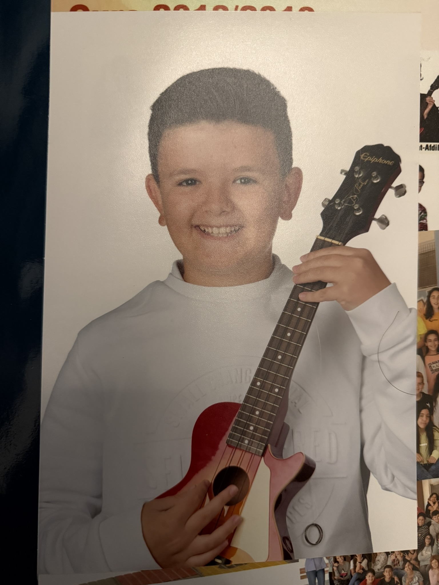

Aprende a tocar
sin saber nada de música
Tres instrumentos, cero solfeo. Elige uno, sigue los pasos y practica con 10 tutoriales sencillos en vídeo.
Cómo usar esta web
Escoge el instrumento que más te guste. No hace falta experiencia previa.
Cada instrumento tiene una introducción y los primeros pasos explicados sin tecnicismos.
Los tutoriales van de más básico a más avanzado. Pausa, repite y practica un poco cada día.
🪕 Ukelele desde cero
El ukelele es una guitarra pequeña de 4 cuerdas, ligera y con cuerdas de nailon que no hacen daño en los dedos. Es el instrumento más fácil para empezar: con solo 3 o 4 acordes ya puedes tocar canciones.
Lo que necesitas
- Un ukelele (el tamaño soprano es el más habitual para empezar)
- Un afinador gratuito en el móvil
- 20 minutos al día
💡 No hace falta leer partituras: en los tutoriales verás los acordes dibujados como pequeños diagramas (cuerdas y puntitos).
Mini glosario
- Acorde
- Varias cuerdas sonando a la vez.
- Rasgueo
- Pasar los dedos por las cuerdas con un patrón rítmico.
- Traste
- Cada barrita metálica del mástil.
- Afinar
- Ajustar la tensión de las cuerdas para que suenen las notas correctas.
Tus primeros pasos
-
Conoce las partes
Cuerpo, mástil, clavijas y 4 cuerdas. Las cuerdas, de abajo hacia arriba, se llaman Sol – Do – Mi – La (G‑C‑E‑A).
-
Afínalo
Antes de tocar, afina con una app. Un ukelele desafinado suena mal aunque lo toques bien, y desanima.
-
Colócate bien
Apoya el cuerpo contra tu pecho con el antebrazo derecho y deja la mano izquierda libre para el mástil.
-
Tu primer acorde
Un acorde es varios sonidos a la vez. Empieza por Do (un solo dedo) y sigue con Fa, Sol y La menor.
-
Rasguea
Con el pulgar o el índice de la mano derecha, baja y sube por las cuerdas con ritmo: abajo, abajo‑arriba, arriba‑abajo‑arriba.
-
Toca una canción
Con 3 o 4 acordes y un rasgueo ya puedes acompañar cientos de canciones.
10 tutoriales para aprender sin solfeo
- 1Curso completo ukulele: Lo básico para empezar a tocarguitartutos · Primeros pasos
- 2Curso completo de ukulele: Como afinar / How to tune / Afinación estándar (G C E A) (Sol Do Mi La)guitartutos · Primeros pasos
- 3CLASES DE UKELELE GRATIS - CLASE 1: PRIMEROS PASOSUKELELEANDOOK · Primeros pasos
- 4Tu PRIMERA lección de UKELELE (especial PRINCIPIANTES)Ukulele Spain · Primeros pasos
- 5🎵CÓMO TOCAR LOS 4 ACORDES BÁSICOS UKELELE - Tutorial FÁCIL Paso a PasoKunde Brand · Primeras canciones
- 6🎵 CÓMO TOCAR EL RASGUEO BÁSICO UKELELE - Tutorial FÁCIL paso a pasoKunde Brand · Primeras canciones
- 7Cómo tocar ACORDES en UKELELE | Tutorial Fácil para PrincipiantesKarma Guitar · Primeras canciones
- 8Aprende UKELELE en 1 Minuto | La canción más fácil (2 acordes)Karma Guitar · A practicar
- 9La Canción más Fácil en Ukelele (Tutorial Principiantes)Karma Guitar · A practicar
- 10Cómo tocar 10 canciones con 3 acordes FÁCILES - Ukelele para PrincipiantesChachiGuitar · A practicar
🎹 Piano desde cero
El piano es el instrumento más visual: cada tecla es una nota y todo está a la vista. Un teclado eléctrico económico, o incluso una app de piano en el móvil, sirve para empezar.
Lo que necesitas
- Un piano, teclado o una app de piano
- Un lugar cómodo con la espalda recta
- 15–20 minutos al día
💡 Muchos tutoriales muestran las teclas iluminadas sobre un piano virtual o con el nombre de la nota, así que no necesitas saber solfeo para seguirlos.
Mini glosario
- Nota
- Cada sonido: Do, Re, Mi, Fa, Sol, La, Si.
- Octava
- Distancia entre un Do y el siguiente Do.
- Acorde
- Tres o más notas sonando a la vez.
- Digitación
- Qué dedo usas para cada tecla.
Tus primeros pasos
-
Mira el teclado
Hay teclas blancas y negras. Los grupos de 2 y 3 teclas negras se repiten: son tu mapa.
-
Encuentra el Do
El Do es la tecla blanca justo a la izquierda de cada grupo de 2 negras. Desde ahí, las blancas siguen: Do‑Re‑Mi‑Fa‑Sol‑La‑Si.
-
Postura y dedos
Muñecas relajadas, dedos curvados como si sujetaras una pelota. Los dedos se numeran del 1 (pulgar) al 5 (meñique).
-
Mano derecha
Toca Do‑Re‑Mi‑Fa‑Sol con los dedos 1‑2‑3‑4‑5, despacio y sin prisa.
-
Primera melodía
Con unas pocas notas ya suena Estrellita, ¿dónde estás?
-
Acordes
Tres teclas tocadas a la vez (saltando una). Con 4 acordes se acompañan miles de canciones.
10 tutoriales para aprender sin solfeo
- 1Lección #1 Aprende a Tocar Piano DESDE CERO!!!Piano Allegro Academia Virtual · Primeros pasos
- 2CURSO de PIANO para Principiantes ABSOLUTOS 🎹 ¡Toca Piano HOY! | Clase #1Juan Diego Arenas · Primeros pasos
- 3El único video sobre la posición de la mano que necesitarásOctavi Plays · Primeros pasos
- 4Clase 1: Ejercicios para la correcta posición de las manos en el piano. Curso Iniciación TécnicaNotarella - Aprender Música Online · Primeros pasos
- 5⭐ ESTRELLITA DÓNDE ESTÁS ⭐ PIANO FÁCIL 🎹 TUTORIAL + NOTAS | easyProfe Benito · Primeras canciones
- 6Cómo Tocar Piano y Teclado: Día 1 - Tu Primera Canción FÁCIL Para Principiantes💪Juan Fra Nieto · Primeras canciones
- 7PARA ELISA en Piano 🎹 FACIL | Tutorial con Notas | Cómo Tocar Fur Elise en Teclado ( Beethoven )El Profe Yisaac · Primeras canciones
- 8ACORDES de PIANO: (Tutorial Épico y Fácil) Acordes Mayores, Menores y Másladomicilio · A practicar
- 9PIANO: Cuatro ACORDES para tocar MIL CANCIONES - Tutorial Fácil y Rápido 🎹 🔥Música y Simpleza · A practicar
- 10UN MUNDO IDEAL - ALADDÍN - PIANO FÁCIL CON NOTAS - PIANO TUTORIALMUSICALE · A practicar
🎶 Flauta desde cero
La flauta dulce es barata, ligera y fácil de hacer sonar. Tiene agujeros que se tapan con los dedos: cada combinación es una nota. Es perfecta para aprender melodías desde el primer día.
Lo que necesitas
- Una flauta dulce soprano (comprueba en el primer tutorial si usa digitación barroca o alemana)
- Un paño para secarla tras tocar
- 10–15 minutos al día
💡 Mira en los vídeos el dibujo de la flauta con los agujeros rellenos: así sabrás qué dedos poner sin leer partitura.
Mini glosario
- Embocadura
- Cómo colocas los labios en la boquilla.
- Digitación
- Qué agujeros tapas para cada nota.
- Escala
- Las notas ordenadas de grave a agudo.
- Aire
- Soplo constante, suave y sin parar.
Tus primeros pasos
-
Conoce la flauta
Boquilla arriba, 7 agujeros delante y 1 detrás (el del pulgar izquierdo).
-
Soplo suave
Sopla como si dijeras «tu» muy suave. Si chilla, estás soplando demasiado fuerte.
-
Tapa bien los agujeros
Usa la yema del dedo, no la punta. Si se escapa aire, el sonido sale sucio.
-
Tus primeras notas
Si, La y Sol son las más fáciles: solo usan los 3 primeros dedos de la mano izquierda.
-
Más notas
Añade Do, Re, Mi y Fa. En poco tiempo conocerás la escala completa.
-
Primera canción
Con pocas notas puedes tocar Himno a la Alegría o Cumpleaños feliz.
10 tutoriales para aprender sin solfeo
- 1CÓMO TOCAR FLAUTA DULCE desde cero | Curso Flauta Dulce Clase #1 | Notas Sol, La y SiDP - Music Academy · Primeros pasos
- 2Cómo tocar flauta dulce desde cero: Notas básicas y postura (Principiantes)Jorge Mendoza · Primeros pasos
- 3Notas en flauta dulce,...notas básicasFlauta dulce fácil · Primeros pasos
- 4Aprende a tocar la flauta desde cero - parte 1Antonio Music Lab · Primeros pasos
- 5Cómo tocar todas las notas en la flauta dulce - La escala naturalJavi Cote · Primeras canciones
- 6Cómo tocar Flauta Dulce - Clase #2 - Himno a la Alegría y Figuras CorcheasDP - Music Academy · Primeras canciones
- 7👉 Himno de la Alegría de Beethoven 🎶 flauta dulce fácil, tutorial con animación + notasEl Profe Yisaac · Primeras canciones
- 8⭐ Estrellita Donde Estás ⭐ simplificada, Tutorial con animación para flauta dulce, canción fácilEl Profe Yisaac · A practicar
- 9Tutorial de como interpretar El Cumpleaños Feliz en flauta dulceGUIPAFU · A practicar
- 10Notas naturales en flauta dulceNelson Calazán · A practicar
📸 Sobre mí

Esta web es un ejercicio de DAW2. Para demostrar que los tutoriales funcionan, aquí me tienes tocando uno de los instrumentos.
Si yo he podido, tú también. ¡Empieza hoy mismo!